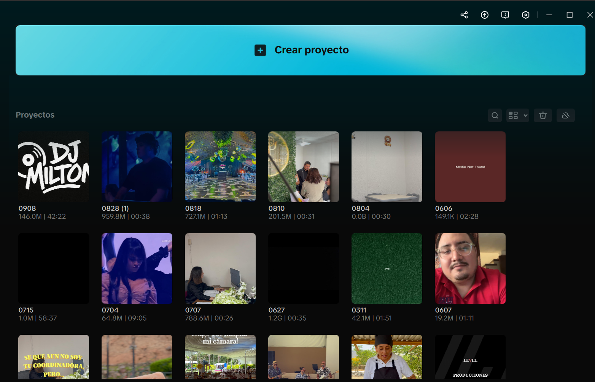
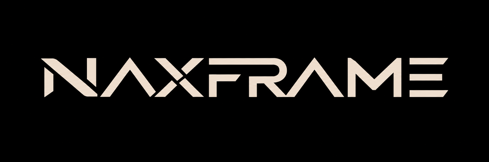
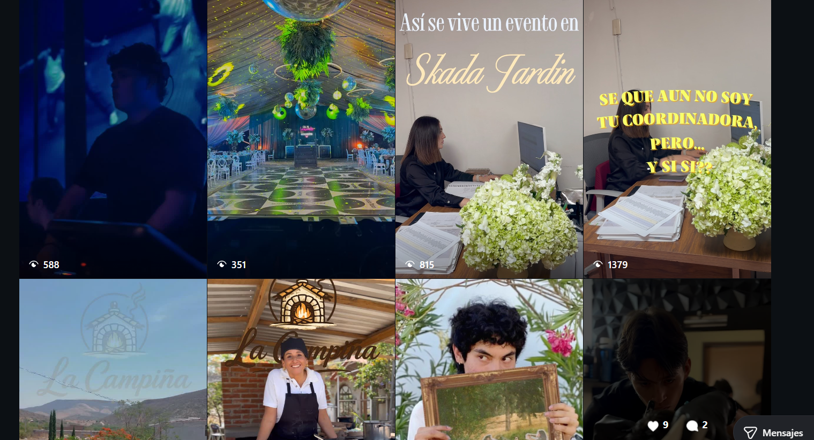
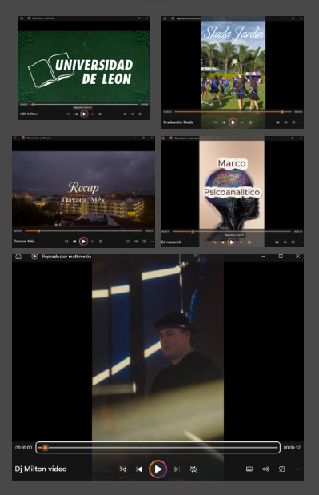
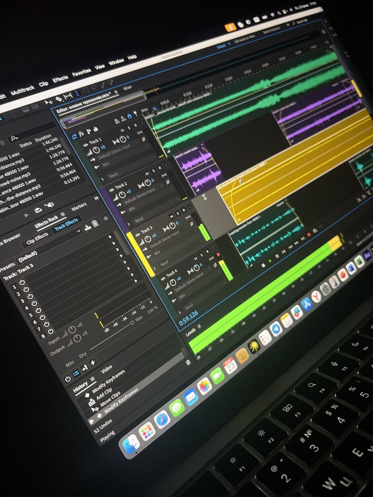
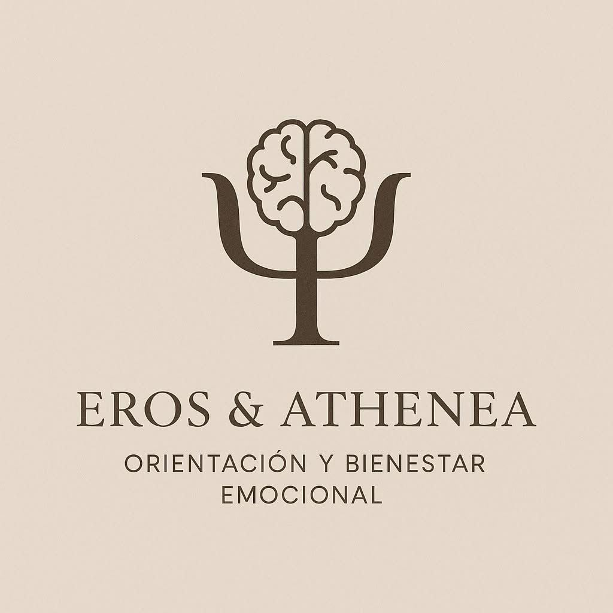
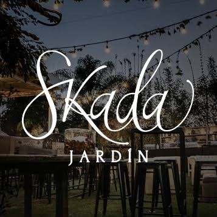
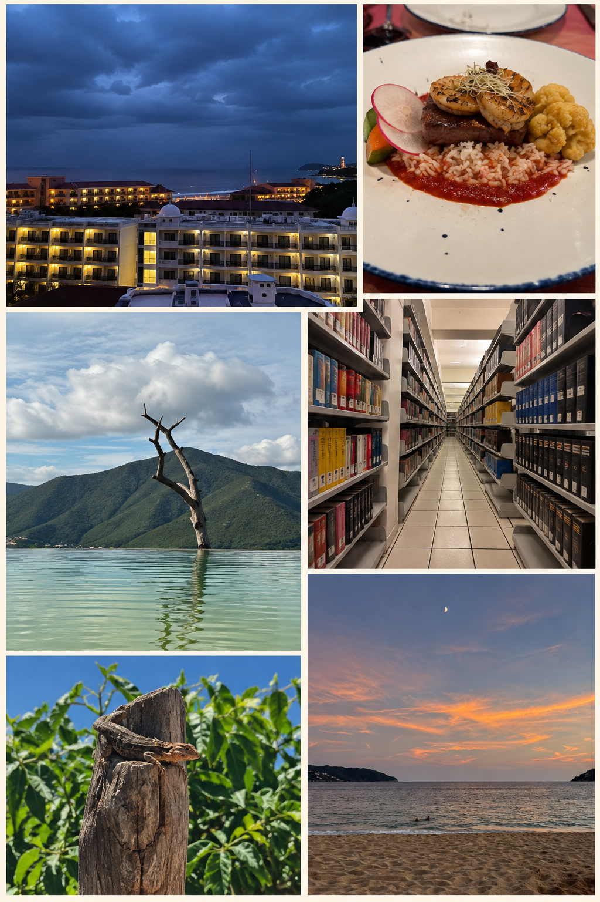
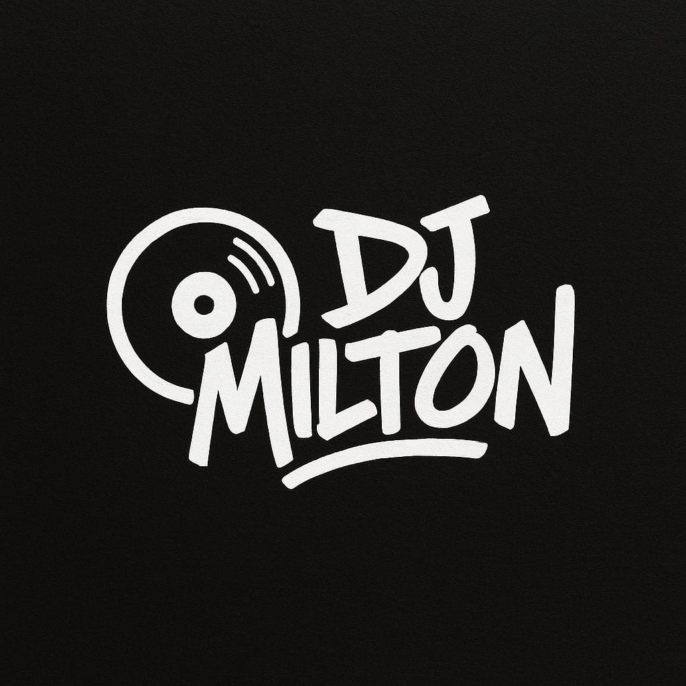

Edición audiovisual
Edición y montaje de contenido.
NEXFRAME VISUALS
Edición de video, fotografía y creación de contenido audiovisual.
Ver mis trabajosSOBRE NEXFRAME

NexFrame Visuals es un proyecto enfocado en la creación y edición de contenido audiovisual.
A través de la edición de video, fotografía y producción de contenido, busco transformar ideas y experiencias en piezas visuales que comuniquen de una manera atractiva.
PORTAFOLIO
Algunos ejemplos de trabajos audiovisuales, proyectos personales y contenido creado para diferentes proyectos.

Edición y montaje de contenido.

Videos adaptados para redes sociales.

Exploración de diferentes estilos audiovisuales.

Fotografía y video para proyectos.
EXPERIENCIA
Algunos de los proyectos escolares, personales y colaboraciones en los que he participado.

Proyecto relacionado con el área de psicología, desarrollado como parte de una propuesta académica y audiovisual.

Creación de contenido audiovisual para mostrar espacios, momentos y detalles de eventos sociales.

Creación de fotografías y videos durante viajes y experiencias personales.

Colaboración para crear contenido audiovisual relacionado con música,presentaciones y redes sociales.
NEXFRAME VISUALS
¿Tienes una idea, proyecto o evento?
Contacto: 5631740274